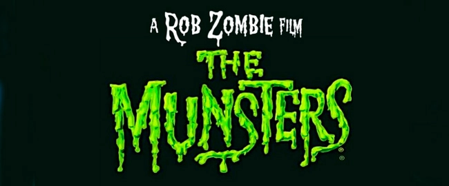

Trailer de la secuela de “The Witch” de Park Hoon-jung
En 2018 veía la luz "The Witch: Part 1. The Subversion", una película de terror surcoreana dirigida por Park Hoon-jung
El próximo 15 de junio verá la luz su segunda entrega, "The Witch: Part 2 - The Other One" de la que ya podéis ver su trailer.
Seguir Leyendo
“La Familia Monster” de Rob Zombie podría estrenarse directamente en Netflix
Según apunta la gente de Bloody-Disgusting, el nuevo trabajo de Rob Zombie que adapta la mítica serie de "La Familia Monster", podría estrenarse directamente en Netflix.
Según el medio, la película se estrenaría el próximo otoño. Sin embargo la noticia aun no está 100% confirmada, por lo que debe tomarse estrictamente como un rumor.
Seguir Leyendo
